DAY 4: Kurosakiso (くろさき荘) > Tanohata (田野畑)
SITES: Kitayamazaki Cape (北山崎), Kitayama Beach (北山浜) with hand-dug tunnels, Aketo Beach (明戸浜)
Stay: Hotel Sedawaya in Miyako
Day four was the toughest hiking day by far, but the most beautiful.
Another early start, after a proper bath and breakfast at Kurosakiso. We get a few hours of sunlight here, which is stunning against the sea. It's a ~9km trail that winds through the Tohoku coast, which is a series of undulating outlets and inlets with massive sheer drops. At each cape (outlet), you can see across the next four or five outlets, which are all dotted with pine trees. Pictures would probably do more justice than my words, but they're nothing compared to eyes.
The coast here changes slightly, with more small harbours for boats. We are also nearing the areas where the tsunami in 2011 hit hardest. The architecture and scenery nearby begin to reflect this.
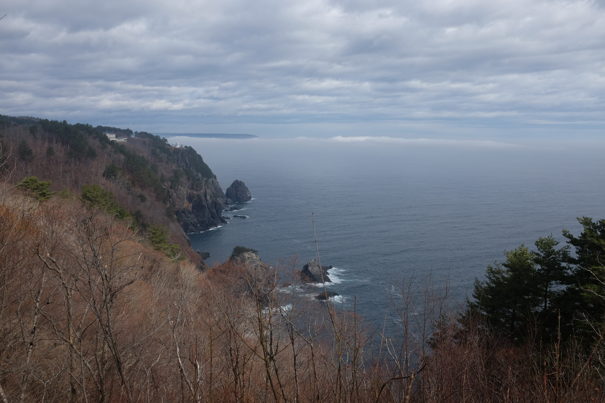
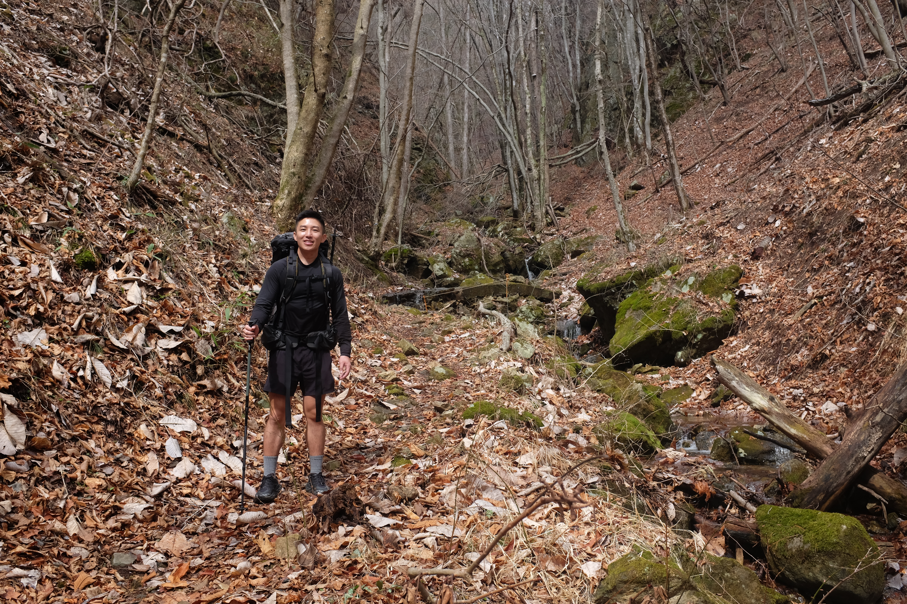
At just a tick tock before noon, we make it to the Kitayamazaki Visitor Area, which has several cute shops. We meet the mst fluent English speaker so far, a man whose father owned one of the shops. He speaks to us in fluent English. Turns out, he went to Texas A&M back in the 1980's doing international relations. We don't have time to get into the details, but he leaves an impression on me. After that, the fog of the morning is slowly starting to burn off, and the second portion of the hike -- mostly winding along the various capes -- is stunning.
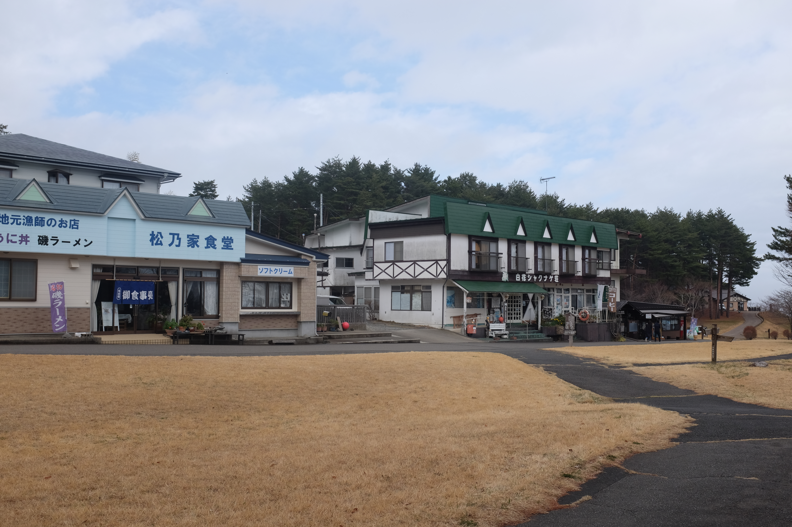 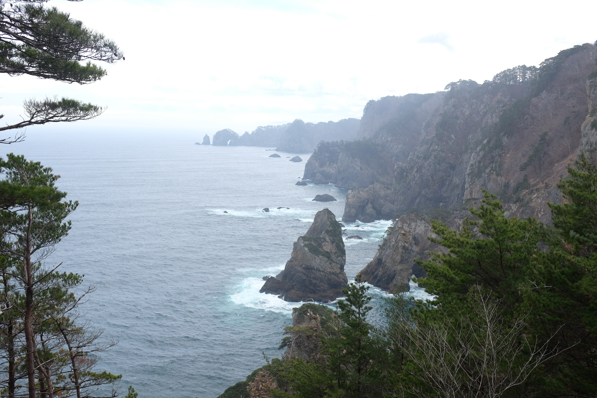
The trees along his section are amazing. Proud soldiers standing upon solid rock, in the most precarious places.
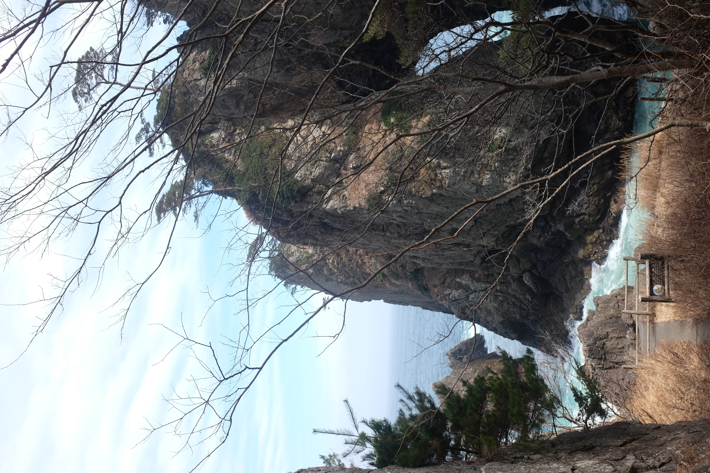 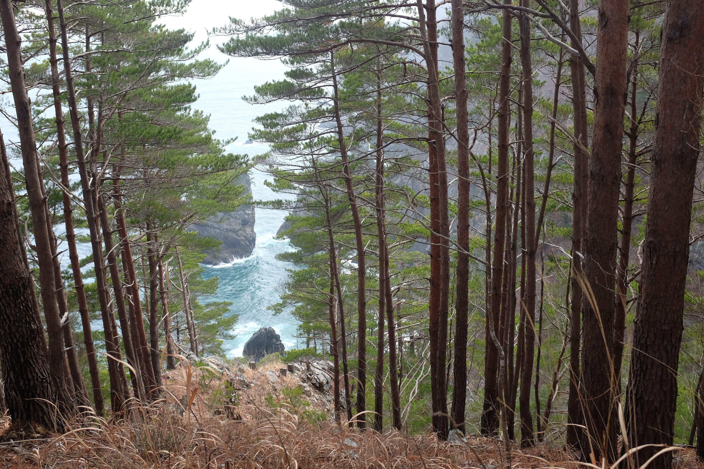 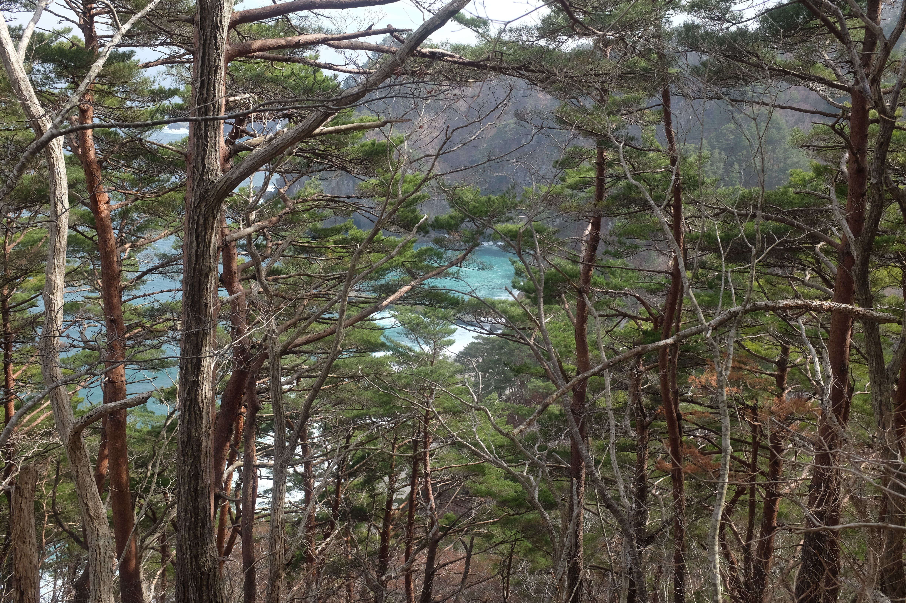
We make our way through the first beach, through the tunnel. Within 10 minutes, all of your altitude is reduced to sea level, and you get a new vantage point looking up, not down.
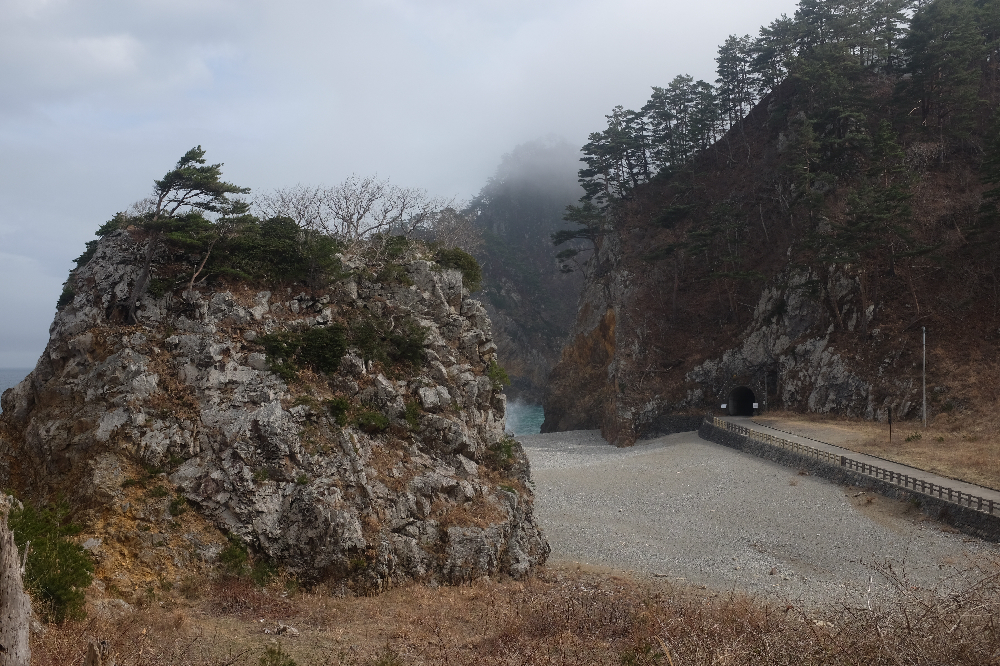

There are some strange hand-dug tunnels that line the beach. They're pitch dark when you enter, but are relatively short. I presume they were used for easier transportation across the mountains back in the day.
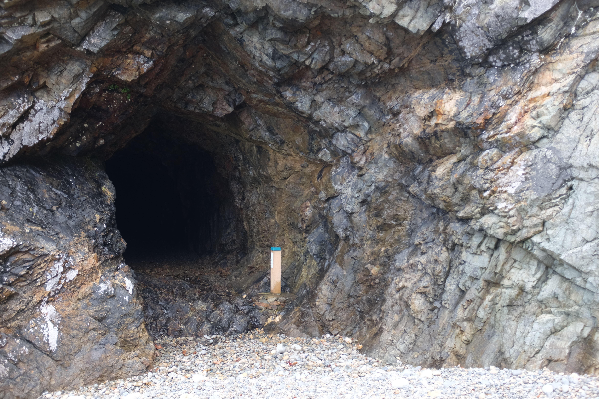
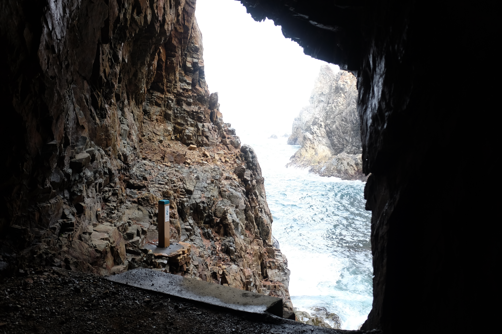
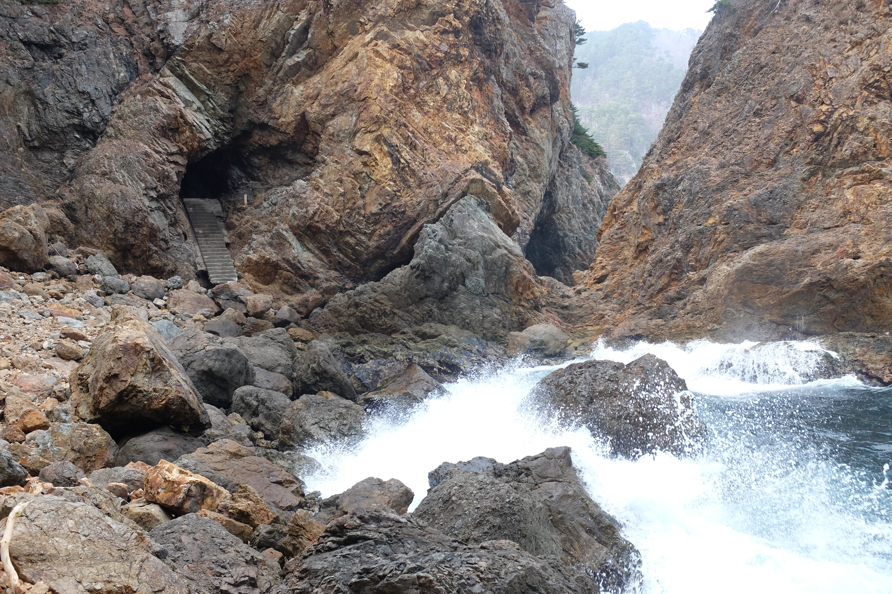
After what is about 4.5 hours of descent and ascent from these cape views (they're getting painful at this point) we finally make it to Aketo Beach. There's a relic of a damaged sea wall here, which is a very physical representation of March 11, 2011 when the tsunami hit. But all throughout the hike we saw signs marking the height of the water, heights at which you'd be safe from flooding water, and evacuation routes. There's a quiet stillness at Aketo Beach. The entire are that would be sand is sand with weeds grown over it, and a seawall memorial. Even on a quiet Sunday, the waves roar and swell to shore. An older man walks along the coastline, unafraid.
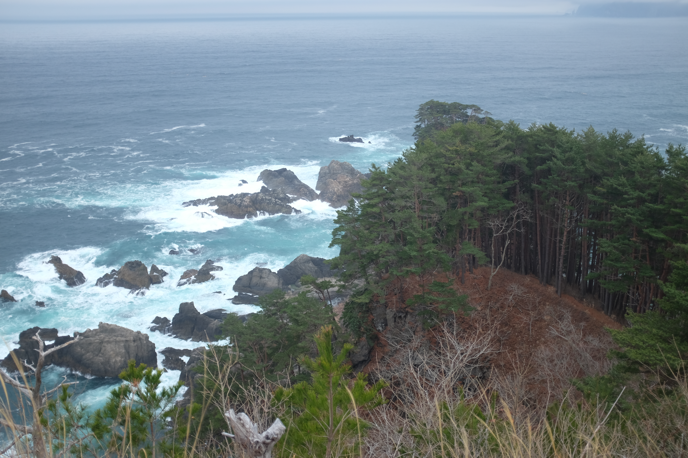 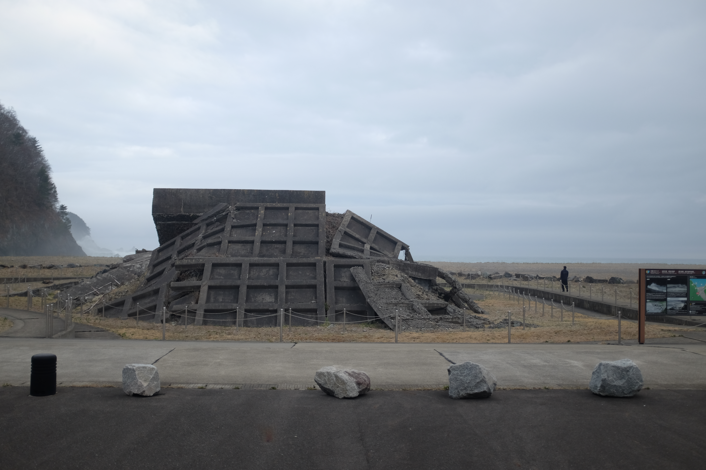